DESIGN PROCESS
DESIGN PROCESS
DESIGN PROCESS
Scroll Down
Welcome to the behind-the-scenes journey of creating HillPhatfolio, a portfolio that not only showcases my work but also reflects my personal brand and design philosophy.
1. DEFINE TONE AND STYLE
My journey to create a portfolio begins with deciding on the tone and style. After careful consideration and thorough research, I settled on a modern and minimalistic aesthetic for my website. This choice not only aligns with contemporary design trends but also resonates with my personal taste, ensuring that the portfolio authentically represents me.
2. INSPIRATION AND MOODBOARD
After deciding on the tone and style for my website, I delved deeper, seeking inspiration from other portfolios. Echoing Pablo Picasso's words, "Good artists borrow, great artists steal", I created a moodboard that became the foundation for the entire project. This moodboard set the tone, guiding every design decision and shaping the project's direction.
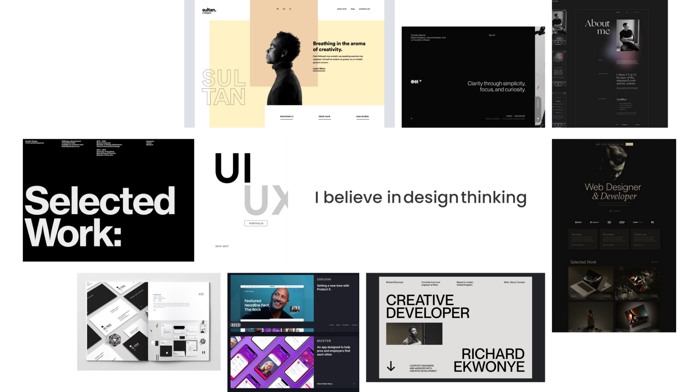
3. COLOR PALETTE SELECTION
#FFF
#000
#FF4D5A
#9C9C9C
4. CHOOSING TYPEFACE
For typography, "Italianno", "Montserrat", and "Roboto" were selected to ensure readability and aesthetic appeal. Furthermore, each font can easily be distinguish. Thus, these elements were chosen to create a cohesive and engaging user experience.
01.
Italiana
02.
Montserrat
03.
Roboto
5. INFORMATION ARCHITECTURE
I developed an information architecture to provide a seamless and intuitive experience for users navigating the site. This framework combines aesthetic appeal with practical, user-centric design, ensuring that every interaction showcases my ability to create an accessible and attractive website.
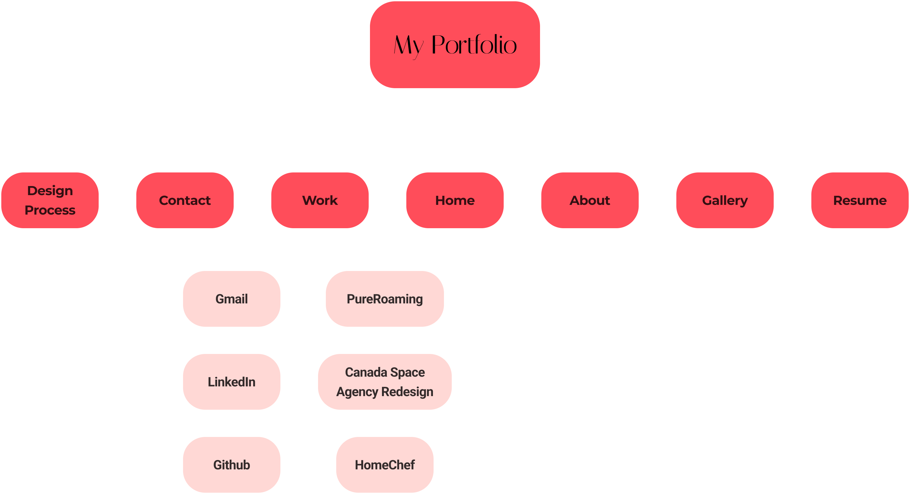
6. WIREFRAME AND DESIGN
My design process kicked off with the creation of low-fidelity wireframes in Figma, laying the groundwork for an intuitive layout and seamless user flow. This essential phase set the stage for the development of mid-fidelity and high-fidelity designs, where I carefully crafted and refined the user interface.
7. Development
Based on the wireframe and design, I developed a website using using HTML5, CSS, Javascript, Bootstrap, Figma, and Canva. I also made some minor changes along the way that improved the overall appearance and functionality of the wbesite.
HTML5 |
CSS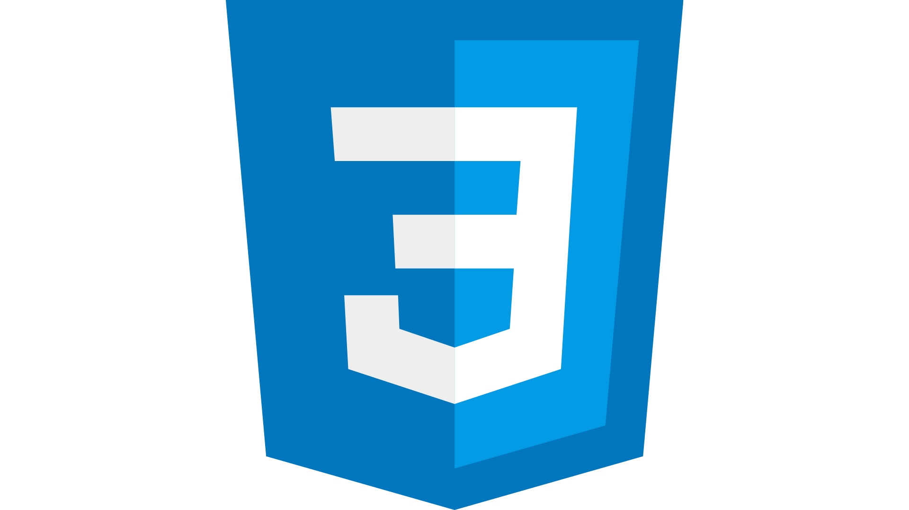 |
Javascript |
Bootstrap |
Figma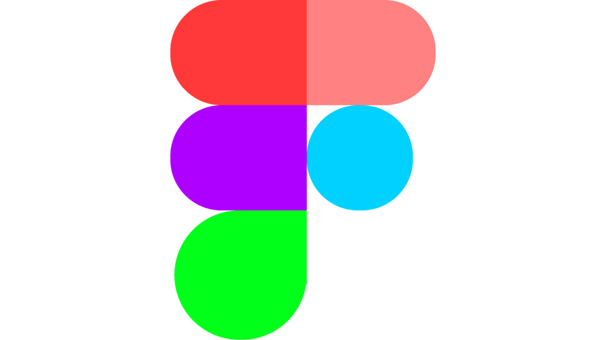 |
Canva |
8. Reflection
This project was a journey of growth and learning. It taught me the importance of refining code and improving website responsiveness. I faced challenges like balancing aesthetic design with functional usability and adapting to rapidly changing technology trends. Looking back, I would invest more in user testing to gather feedback for iterative improvements and better anticipate user needs.
